O szkole
Ośrodek Szkolenia Kierowców Champion powstał w maju 2004 roku, a od listopada 2025 roku prowadzą go nowi właściciele. Biuro i sala wykładowa są w Witnicy, plac manewrowy w Gorzowie Wielkopolskim.
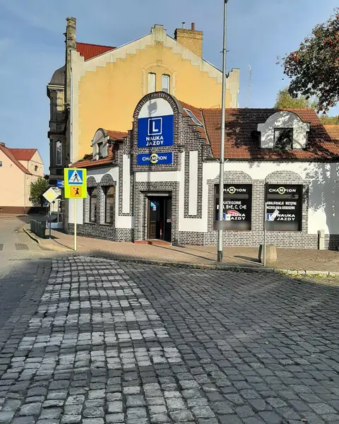
Kogo szkolimy
Szkolimy na prawo jazdy kategorii B, B+E, C i C+E. Prowadzimy też kwalifikację wstępną i szkolenia okresowe dla kierowców zawodowych kategorii C i C+E.
Witnica leży między Gorzowem Wielkopolskim a Kostrzynem nad Odrą, niedaleko Dębna - zapraszamy kursantów z całej okolicy. Najbliższy WORD, w którym zdaje się egzamin państwowy, jest w Gorzowie Wielkopolskim.
Na co stawiamy
- Skuteczne i rzetelne szkolenia.
- Nowoczesne środki dydaktyczne.
- Doświadczona kadra instruktorska.
- Pojazdy szkoleniowe takie same jak na egzaminie w WORD.
- Plac manewrowy tylko dla naszych kursantów.
Plac manewrowy w Gorzowie Wielkopolskim
Utwardzony i oświetlony plac przy ul. Kostrzyńskiej 12 jest wyłącznie do dyspozycji naszych kursantów. Ćwiczymy na nim manewry na samochodzie osobowym, z przyczepą, ciężarówką i zestawem z naczepą.
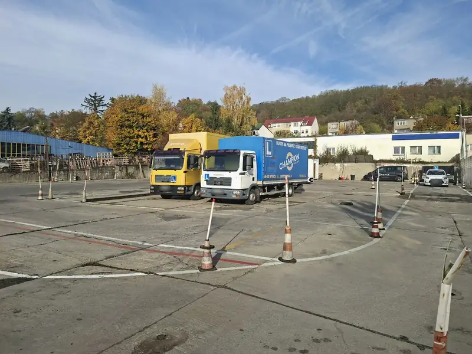
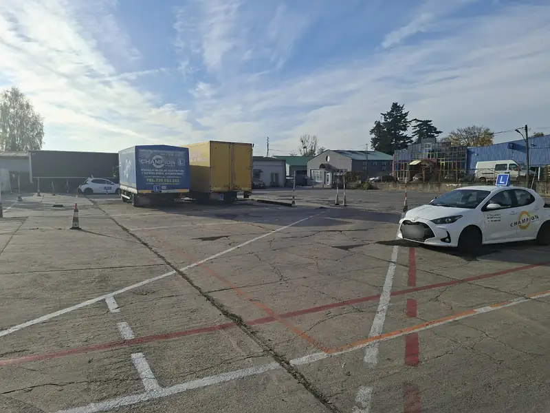
Pojazdy szkoleniowe
Szkolimy na pojazdach takich samych jak na egzaminie w WORD.
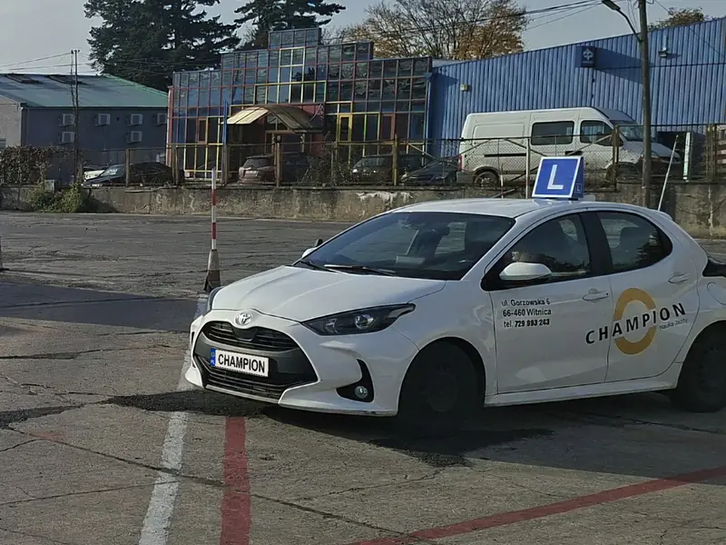
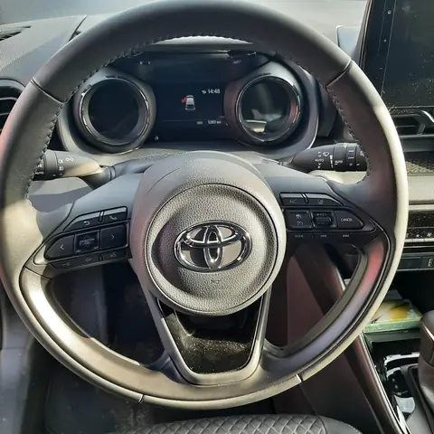
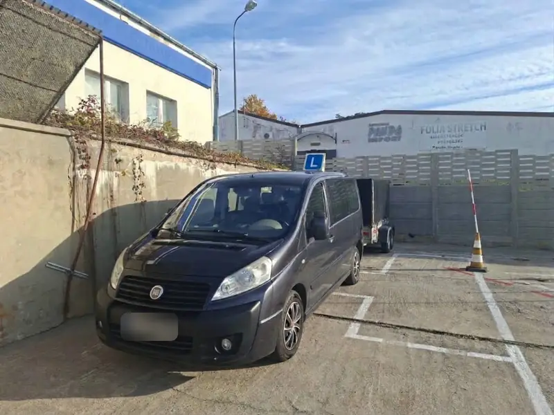
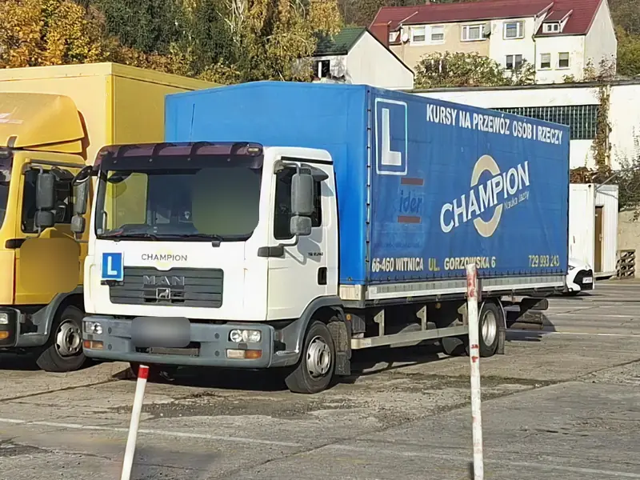
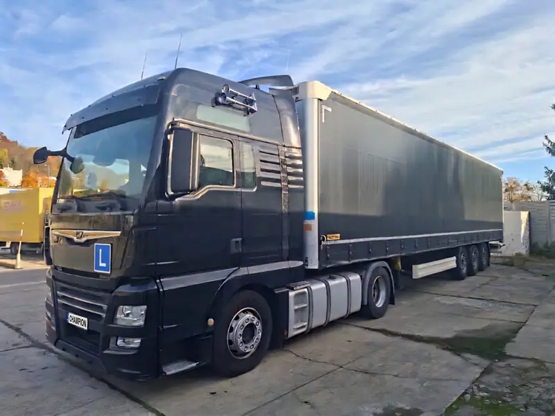
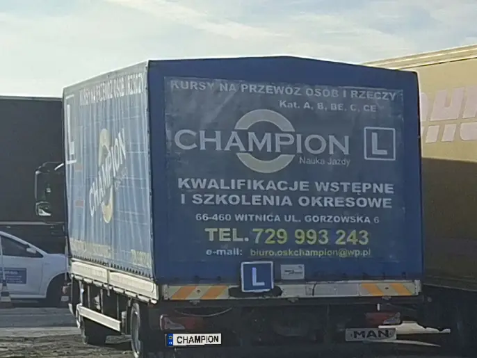
Biuro i sala wykładowa w Witnicy
Biuro i sala wykładowa mieszczą się przy ul. Gorzowskiej 6. W biurze zapiszesz się na kurs i ustalisz terminy jazd.
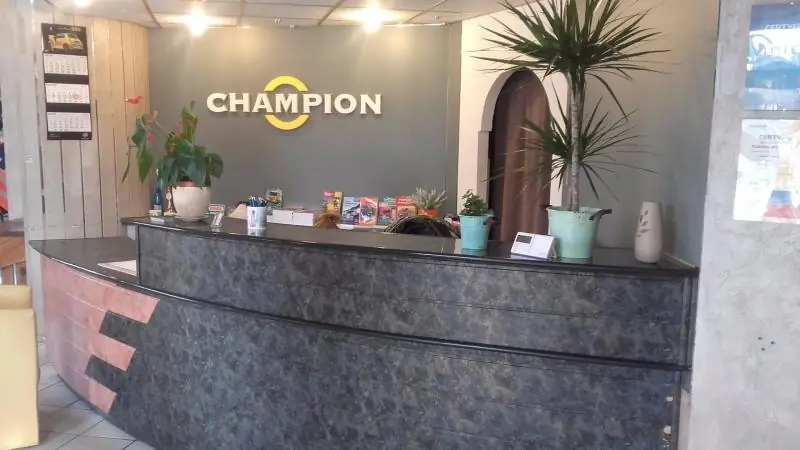
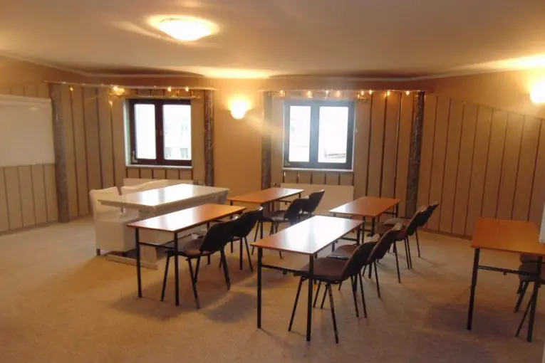
Standardy ochrony małoletnich
Szkolimy także osoby niepełnoletnie, dlatego w ośrodku obowiązują Standardy Ochrony Małoletnich. Dokument jest dostępny do pobrania.
Zapytaj o najbliższy termin kursu
Biuro w Witnicy jest czynne od poniedziałku do piątku w godz. 10:00-17:00.